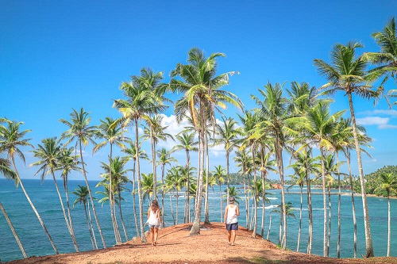

Mathara
Mirissa
Mirissa is a small town on the south coast of Sri Lanka, located in the Matara District of the Southern Province. It is approximately 150 kilometres (93 mi) south of Colombo and is situated at an elevation of 4 metres (13 ft) above sea level. Mirissa's beach and nightlife make it a popular tourist destination. It is also a fishing port and one of the island's main whale and dolphin watching locations.
Pollhena
.jpg)
Polhena beach, one of the most beautiful beaches in Sri Lanka. Naturally, grown coral reef softens the peak waves so that it is safe to swim in this area throughout the year. A hotspot for colorful fishes around the reef which also has become a good source of income for the unemployed youths to catch them for exporting for domestic fish tanks kept for delight the houses. Located just about two kilometers away from the city of Matara
Paraviduwa
The Matara Paravi Duwa Temple is in a wonderful island location of the coast of this busy, bustling town. The Buddhist Temple can be seen from afar as you drive along the coast road near the centre of town. It is accessible via a bridge and it is well worth taking time to explore this unique attraction which has a very special atmosphere surrounded by the waves near to southern most tipoff the islands. From the bus stand, head to the coast road and the 'Golden Island Pathway' is right in front of you, with the Temple in commanding position.